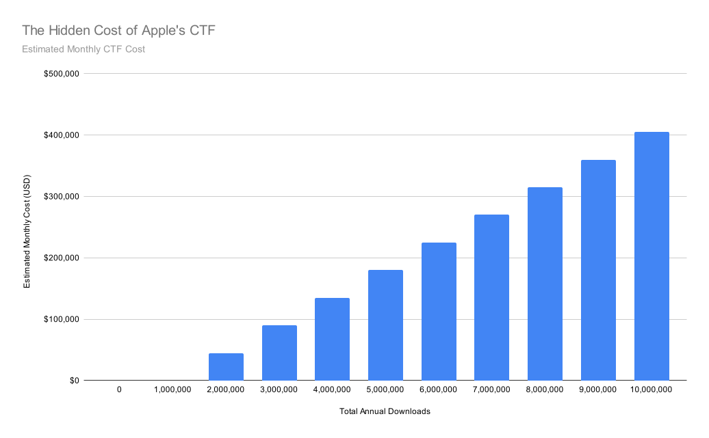
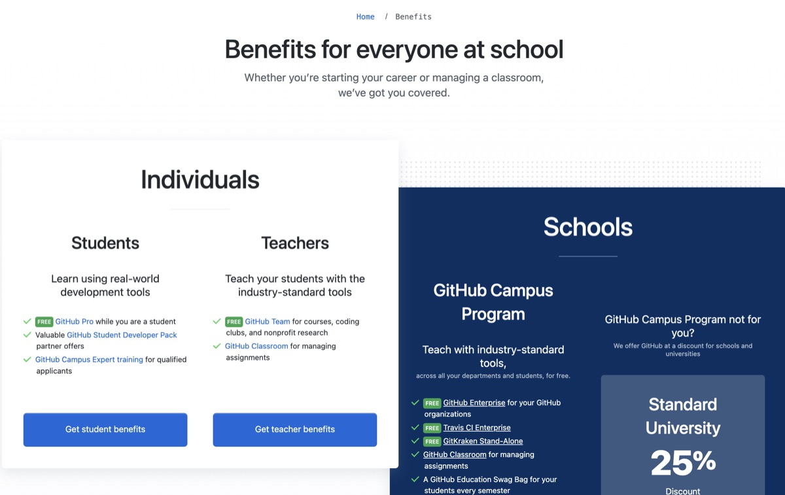

2026 is already shaping up to be another brutal year for tech. Since January alone, around 128,000 people have been laid off across some of the biggest tech firms, and this figure doesn't even factor in smaller startups. By the end of 2025, we saw about 245,000 jobs cut, and 2026 is quickly approaching those figures in just a few months.
This is the reality that computer science students are graduating into, and the situation doesn't look like it's going to improve soon. In a world with fewer available jobs and a strong demand for work, competition is fierce, and the biggest piece of advice we all hear nowadays is that you have to make yourself stand out.
In most cases, that means wowing recruiters with shipped portfolio projects that showcase your skills and put you at the front of the line. This puts tremendous pressure on students, and it's difficult to compete. Traditionally, their first entry-level position was supposed to be a time for genuine learning and mentorship. Now, they're expected to forgo that and have something amazing to show on their post-grad resume.
Additionally, it's even harder to specialize in mobile development, particularly for Apple platforms. It costs $99 a year just to get started, and once you ship your first project, 30% of your revenue goes to Apple as commission fees. The Apple ecosystem is wonderful to develop in, and it's amazing for consumers, but it's not open and accessible to young, future developers who have a real passion for building things. I worry that these barriers can stem the flow of the developer pipeline, which would be disastrous for the entire ecosystem going forward.
To be clear, I'm not looking for Apple to open the floodgates and remove its developer program or do away entirely with the App Store fee structure. I actually see the immense value in what Apple uses these funds for. Their ‘walled garden’ approach has clear benefits. First, any iOS developer knows firsthand how strict their review process is for apps. It keeps bad apps, like malware out, which in turn protects users' privacy and security.
I think it has beneficial downstream effects, too. Consumers are more likely to download apps from indie developers because they don't have to worry about the risks. This is not the case on other storefronts. Apple deserves its cut to keep funding and maintaining the App Store, but that funding shouldn't come from the smallest developers; rather, it should come from the big developers who earn the most revenue.

If you want to see how some of these fees scale, just look at the new EU Core Technology Fee (CTF) in action. If a free-to-download app goes viral and hits 10 million downloads, the developer suddenly owes Apple over $400,000. I would imagine this being financially devastating for small and independent developers, something they couldn't afford at their stage. This new fee structure is the result of the EU's Digital Markets Act (DMA). While many would think that governmental intervention would be beneficial to developers and consumers, the reality is far more complex, and that is not always the case. A recent study conducted by economists Gastón Llanes and Leonardo Madio found that developers prefer ‘pricing parity’ for their products across storefronts, even when different fee structures are in place. Regulation might force more competition between storefronts, but the economics play out the same; consumers and developers continue to pay the same price, and at the end of the day, the core issue isn't fixed.
That's why I think the change has to come from Apple itself. I believe a two-part solution with a few key points can make beneficial changes for all parties. First, for students, I think Apple should completely waive the $99 annual developer fee and bundle it with a new educational program, built from the ground up, that includes new tools and resources for students learning Swift, Xcode, and the entire suite of Apple developer products and frameworks. It's a lot to learn and intimidating at first, so this would be the perfect entry point for any student just starting out and would encourage and foster a stronger developer community. Access could be granted with valid .edu email addresses, ensuring it goes to real students. This is a similar approach to what GitHub has taken, and it's widely popular.

Second, for independent developers, I think Apple should waive all commission fees for the first $1 million in revenue and implement a progressive fee structure instead of using the flat 30% or the 15% for members of the Small Business Program. A progressive fee structure would be the most beneficial to all parties because the top 2% of developers generate 98% of the App Store's revenue. This is proof that Apple can afford giving smaller developers a break without hurting its bottom line.
Overall, with these big changes, I see the Apple developer community getting stronger, even in the 2026 labor market. So far, I've found it to be an amazing and helpful community to be a part of. My end goal here is to encourage all of us developers to shift our mindsets. I want to see us challenge the status quo instead of just accepting it, and I want to see Apple respond and truly invest in the next generation, because without us, a core part of Apple dies.